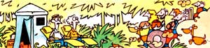

Life can be confusing-and challenging, AND rewarding-deep in the Florida Everglades.
REPORT FROM
Every time I get a new issue of MOTHER, I eagerly search out the latest "Report From Them That's Doin' ". [EDITOR'S NOTE: As of issue 81, the series' title was shortened to "Report From:".J Funny how long it takes for things to sink in with me sometimes: You see, I only recently realized that we-my husband Paul and I-are among Them That's Doin' . . . and have been for some 14 years!
IN THE BEGINNING
I can't exactly say we did things the right way when we made our move back to the land. For example, we didn't follow the good advice about having "nest egg" money to fall back on in hard times . . . and we weren't particularly prepared in terms of tools or knowhow, either. In fact, our decision to up and leave Miami wasn't based on logic at all. It was made because we were long on overdue bills (mortgage, car, and credit card payments, plus utility and food costs) and short on cash. With no jobs and a total of $336 to our name, we reckoned the time had come for a change.
The only thing we had going for us was a piece of land on which we'd paid religiously, and therefore owned, in preparation for our retirement. It was remote-situated back in the Everglades-but it was ours, and we figured we could resume our lives there.
So we sold most of our household belongings and called the credit companies to come pick up all the items that we hadn't finished paying for. By the time the "purge" was over, we were broke and sorely lacking in personal possessions . . . but we were free. We packed what little was left into our 1961 Ford truck and-looking a bit too much like the Beverly Hillbillies-departed the city.
Three hours (and two breakdowns) later, we lurched to a halt on our new homestead.
A BAD START
Using a machete to hack a path through our property, alongside a canal we finally found a spot that was clear enough to allow us to set up a tent, build a campfire, and try to get some rest.
Even now, more than a dozen years later, that evening is crystal clear in our memories. The mosquitoes were hungrier than we were (and they ate better). The no-see-ums were so thick they clogged our noses and so small that our tent's mesh netting might just as well have been an open door. And the night sounds in the Everglades were new and disturbing-to say the least!-to our cityconditioned ears. Every screech and squawk and slither and snap set our hair on end and got us to recalling scary jungle movies and stories of Bigfoot on the loose.
Sleep? There's no such thing as a good night's sleep on a night as bad as that one!
THEN CAME THE DAWN
Our lives didn't look any brighter the next morning, either. We didn't have jobs, money, or nearby friends . . . but instead of crying and calling everyone to say we'd made a mistake (which is what I felt like doing), I made a pot of coffee while Paul went fishing for our breakfast.
It's amazing what the smell of coffee perking on a cypress-wood fire and the taste of freshly caught bass rolled in cornmeal and fried in a skillet will do for a person's spirit! With hot food warming our bellies ( and our dispositions), we went to work . . . and by early afternoon had cleared a larger spot on the canal bank and had moved our gear to that site. Worn out, but happy and feeling more "at home", we collapsed in our lawn chairs to enjoy the peace and quiet of our surroundings.
We'd no sooner settled in, though, than the stillness was broken by the sounds of engines and human voices headed our way. To our surprise, careening up the road at high speed was a sight no city slicker has ever imagined: a caravan of swamp buggies filled to overflowing with people and dogs.
UMM . . . HELLO, GLAD TO . . . UMM . . .
Before we knew what was happening to us, the odd assemblage came to a halt, and a large, hairy man wearing bib overalls (and nothing else, not even shoes) approached with an armful of bags and boxes. After shouting for the others to hurry up and "bring the stuff", he stopped long enough to say hello to the two of us, who by that time were standing with our eyes popping and our mouths open, speechless. The group gathered for a moment . . . and then a couple of men started tearing up our carefully made fire pit while some others hauled up rocks from the canal bank to commence rebuilding the whole thing. The women-all five of them-began setting up plywood tables and spreading out pots and pans and bags full of food. All the folks were so busy preparing the evening meal that they seemed to forget we were there!
Eventually, though, things settled down and we were each handed a mason jar full of what looked like tea (it turned out-much to my teetotaling surprise at first gulp-to be homebrewed beer). As we were introduced to everyone and put at ease with these odd people, we discovered that we did know one of the men. We had talked to him when visiting the area a few months before and had mentioned that we'd be moving to the region. Seeing our smoke and campsite, he'd rounded up the neighborhood to welcome us.
That night, the whole group pitched tents, rolled out sleeping bags, and stayed. For some reason, the Everglades didn't seem so hostile that evening . . . not even the bugs bothered us.
After breakfast the next morning, the men discussed where "the cabin" ( what cabin? ) should be, while the women enlisted the help of the older children and-within a few hours-cleared out a goodsized garden spot. Making several trips to the buggies, they toted box after box of plants-including banana, fig, and mango trees-to the site and began setting them in the ground. Remembering all the back-breaking work I'd done conditioning my garden's soil in Miami, I didn't really believe that this hasty work would produce good results . . . but I kept quiet anyway.
In the meantime, the men had cleared the palmettos from a large area before departing for a cypress swamp a few miles down the road. At dusk, they returned with their vehicles loaded down with nice, straight logs.
At dinner that night, everyone sat around discussing "the cabin" and how to get it up with the least effort. Paul and I were never really consulted about the project, or the garden, or the location of either . . . and I have to admit I was beginning to feel a bit put out. I mean, after all, this was our place, and here were strangers with such names as Ida Belle, Gadson, Sampson, Florie Mae, and Toots making our decisions for us!
Apparently realizing how we must be feeling, Sampson explained that folks in these parts were always glad to see new people moving in, so they did everything they could to make sure the greenhorns got a good start. He pointed out that it took time to learn how to live in a swamp and that - without help - most novices stayed only about as long as it took for their mosquito repellent to run out. But our new friends were offering us the benefit of nearly 100 years of collective experience in the Everglades, all to be learned within a few days of watching and listening to them.
You can't argue with reason (or generosity) like that . . . and I'm glad we didn't.
A HOMESTEAD!
After four days of confusion (on our parts) and hard work (by everyone) we all stepped back to survey the results: A few hundred feet from the canal, a small cabin stood on stilts alongside native pines and palms. A large yard and garden-separated from one another by neatly placed cypress logs-occupied the space between the house and canal. And a short distance away, clumps of newly established banana trees swayed gently at one corner of our new privy.
I've never seen a prettier sight nor a more contented bunch of people. But before we could gather the words we needed to express our gratitude to our newfound "family", they were leaving in the same way they'd arrived, amid bustling and shouting and toting and carrying and a roar of swamp buggy engines punctuated by laughter and barking dogs . . . first loud, and then gradually fading out of earshot.
Suddenly, there were just the two of us, and silence. The cabin was small but solid, situated on ground high enough to give us a wonderful view of the surrounding territory. We spent our first evening there falling asleep contentedly after watching the otters in the canal romp and play until dusk.
14 YEARS LATER
In the time that's passed since those first few weeks, those wonderful, helpful strangers have become like brothers and sisters to us. We've lost some of these friends and gained others over the years, and-in a geographical sense-there's still a lot of space between us: Our closest neighbor is 12 miles away. Nevertheless, I know that if we're ever in need of any kind of help, a call on the CB radio will bring our people to aid us in a matter of minutes.
On several occasions we've had the pleasure of joining in to welcome other folks to the area in the same manner that we were "greeted" . . . and we can't help but laugh when we remember how awed and overwhelmed we felt when that long line of swamp buggies and strangers pulled up on our homestead.
We now have a nice four-room house, built around the original cabin (which has become our kitchen). And we enjoy many of the conveniences of modern living-such as running water, lights, a hot shower, and an indoor bathroom-although most are furnished by unconventional means: Our electricity, for example, comes from 12-volt storage batteries charged by a wind-powered car generator . . . our food is kept fresh in old gas-powered Servel refrigerators . . . and our water pressure is provided by a couple of rooftopmounted 55-gallon-drum "reservoirs", which we fill twice a week, using a gasoline-driven water pump.
We've never had to seek outside jobs to help us survive . . . mostly because of the invaluable lessons taught us by our more experienced neighbors. We've learned how to live in dignity and peace, using what we need and saving everything else. We hunt for meat (even taking snakes), but never for pleasure. The hides we tan are turned into useful articles. The garden yields more than we can possibly consume, so we sell the excess produce-as well as craft items made from materials gathered in the woods-at the local flea market on Sundays. Our income averages less than $300 a month, but we always have cash left over at the end of four weeks. Bartering (something everybody used to do) has become an important part of our way of life.
Relatives visiting us from the city still can't understand how we get along without "real" electricity or mail delivery or a nearby convenience store. They think we're "odd", and I guess we are . . . but then, so were a lot of folks throughout history who struck out on their own in search of independence. And I suspect that someday the skeptics will realize the value of our self-reliance. Should hard times come, we'll be ready . . . without having to change our lives a bit.
Meanwhile, we'll just go on being odd (and happy), living the good life as members of a very fine "family" indeed: "Them That's Doin' ".
|
 |
|
|